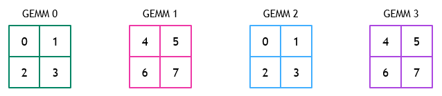
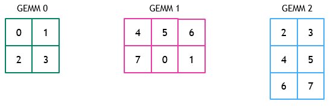
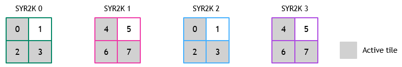
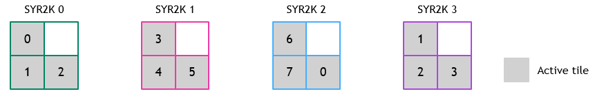
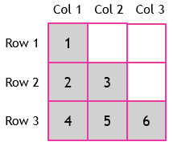
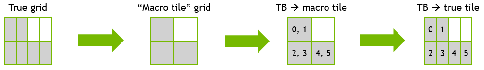

Grouped Kernel Schedulers
CUTLASS’s grouped kernel is a persistent kernel which launches multiple problems (e.g., GEMMs, SYR2Ks) within a single CUDA kernel launch.
Unlike a conventional GEMMs in CUTLASS, which launch a number of threadblocks equal to the number of tiles in the GEMM, CUTLASS grouped kernels typically launch a number of threadblocks that is fewer than the total number of tiles across all problems in the group. Each threadblock is then responsible for computing one or more tiles among the problems in the group. The grouped kernel scheduler (referred to as the problem visitor in code) is responsible for assigning each threadblock the sequence of tiles that it will compute within the group.
This document provides background on the functionality of the grouped kernel scheduler, and describes various optimizations to the grouped kernel scheduler.
Outline
Introduction to Grouped Kernel Schedulers
Given a group of problem sizes and a grid of threadblocks, the scheduler’s job is to assign tiles from problems in the group to threadblocks. Threadblocks in a grouped kernel persistently execute a loop of querying the scheduler for the next tile to compute and performing the kernel-level operations for that tile (e.g., MMA and epilogue). In pseudocode, this looks as follows:
ProblemVisitor problem_visitor;
while (problem_visitor.next_tile()) {
//
// Get next tile index from scheduler
//
//
// Compute MMA and epilogue
//
// Inform the scheduler that we are done with the current tile
problem_visitor.advance(gridDim.x);
}The key functionality of the grouped kernel scheduler lies in the next_tile() method, which determines which tile in the group the calling threadblock should compute next, if any.
Grouped GEMM Scheduler
The scheduler used by grouped GEMM assigns tiles in the group to threadblocks in a round-robin fashion.
Consider, for example, the threadblock-to-tile mapping that occurs for a group of four GEMMs each consisting of a grid of 2x2 tiles. Suppose that eight threadblocks are launched. The figure below illustrates the threadblock ID assigned to each tile in each GEMM in the group.

A similar mapping for problems that do not have the same number of tiles is shown below:

Computing the schedule for a given block
Each threadblock in the grouped GEMM computes its own schedule by calling the next_tile() method described above.
To do this, the threadblock’s ProblemVisitor maintains a thread_idx member that is initialized to blockIdx.x and is incremented by gridDim.x between each tile computed (only the x dimension is used) in the launch configuration for grouped kernels). The scheduler must then figure out which GEMM in the group tile_idx belongs to, and which tile within that problem it maps to.
Determining which GEMM
tile_idxmaps to: The scheduler determines the GEMM to whichtile_idxbelongs by iterating through GEMMs starting with the most-recently visited GEMM, and adding the number of tiles within that GEMM to a running variableproblem_tile_start. The scheduler has found the correct problem for this tile whenproblem_tile_start <= tile_idx < problem_tile_start + tiles_in_problem.Determining the tile within a GEMM
tile_idxmaps to: Once the GEMM to whichtile_idxmaps has been located, the specific tile within that GEMM that this block should compute is given bytile_idx - problem_tile_start. Simple rasterization is then performed to map this one-dimensional tile ID into the two-dimensional coordinate of the tile to compute in the GEMM.
We describe how this search is accelerated in Scheduler Modes.
Grouped Rank2K Scheduler
The previous section described the operation of the scheduler used for grouped GEMM kernels. While this scheduler is sufficient for correctly implementing grouped Rank2K operations (i.e., SYR2K and HER2K), it leads to significant inefficiencies.
We next describe these inefficiencies as well as how the CUTLASS grouped Rank2K scheduler overcomes them.
Inefficiency of grouped GEMM scheduler for grouped Rank2K problems
The grouped GEMM scheduler assumes that every tile in every GEMM in the group will ultimately affect the output of the problem. This is not the case for Rank2K problems, for which matrix C is either upper or lower triangular. Using the default grouped GEMM scheduler for such problems will thus lead to threadblocks frequently being assigned to tiles that exit early (e.g., due to being assigned to a tile in the upper-triangular portion of a lower-triangular problem). This further leads to load imbalance among threadblocks, as the grouped GEMM scheduler assigns nearly the same number of tiles to all threadblocks, regardless of how many tiles are truly active.
Consider an example of a group of four SYR2K problems, each with matrix C consisting of a grid of 2x2 tiles. Matrix C in each problem is lower triangular, indicated by shaded tiles. Consider that eight threadblocks are launched to compute the grouped problem. The default grouped GEMM scheduler will assign threadblocks to tiles in the following order:

In this case, threadblocks 1 and 5 are continuously assigned to inactive tiles. In scenarios in which problems within the group have varying size, we have observed this to still lead to significant load imbalance.
Specializing the scheduler for triangular problems
We seek to design a scheduler that more efficiently maps threadblocks to active tiles for kernels that use triangular output matrices. The scheduler should ideally assign threadblocks only to those tiles within lower-triangular portion of a lower-triangular problem (and vice-versa for upper-triangular problems).
Using the example above, the resulting assignment of threadblocks to tiles from such a scheduler might be:

Achieving this schedule requires mapping from a threadblock ID to tile coordinates (i, j).
We will illustrate this by mapping a lower-triangular matrix with a 3x3 grid. We first calculate row and column indices assuming one-indexed rows, tiles, and threadblock IDs, and then subtract one to convert to zero-indexed versions. Our description borrows heavily from the mapping described here.

Calculating row i given threadblock ID t
For a given row i, all threadblock IDs t in that row satisfy the following:
t <= 1 + 2 + 3 + ... + (i-1) + iThe closed-form equation for the right-hand side is: i(i+1)/2. Using this, we can solve for i given t:
t <= i(i+1)/2
2t <= i^2 + i
2t <= i^2 + i + 0.25 - 0.25
2t + 0.25 <= i^2 + i + 0.25
2t + 0.25 <= (i + 0.5)^2
sqrt(2t + 0.25) - 0.5 <= iTo account for fractional values, we set:
i = ceil(sqrt(2t + 0.25) - 0.5)To turn this into a zero-indexed row and work with zero-indexed t, we perform:
i = ceil(sqrt(2(t+1) + 0.25) - 0.5) - 1
= ceil(sqrt(2t + 2.25) - 0.5) - 1Calculating column j given threadblock ID t and row i
For a given row i, all threadblock IDs t in that row also satisfy the following:
t > 1 + 2 + 3 + ... + (i-2) + (i-1)
--> t > i(i-1)/2Threadblock IDs within a given row are sequential, so the one-indexed column ID for one-indexed threadblock ID t and row i is:
j = t - (i(i-1)/2)The zero-indexed version becomes:
j = (t+1) - (i(i+1)/2) -1
= t - (i(i+1)/2)Accounting for non-square grids
Though the overall output problem size for Rank2K problems is guaranteed to be square, the grids used in computing may not be square due to using non-square threadblock shapes. For example, a threadblock shape of 64x32 operating on a problem of output size 128x128 would result in a grid of 2x4 tiles.
This case can be handled by noting that the output resembles a square grid of 2x2 “macro tiles” each of which contains 2 “true tiles.” We can thus first map a threadblock ID to its “macro tile” using the equations above, and then map it to the “true tile” within its “macro tile.” In the example of a 2x4 grid, this mapping would look as follows:

A zero-indexed threadblock ID t is mapped to its “macro tile ID” t_macro as:
t_macro = t // rWhere r is the ratio of the maximum dimension of the grid to the minimum dimension of the grid (i.e., r = 4 / 2 = 2 in the previous example).
One uses t_macro and the calculations above to find the row and column in the square matrix to obtain i_macro and j_macro (zero-indexed). The mapping from (i_macro, j_macro) --> (i, j) is simply the following:
if (ThreadblockShape::M > ThreadblockShape::N):
r = ThreadblockShape::M / ThreadblockShape::N
i = i_macro
j = (j_macro * r) + (t % r)
elif (ThreadblockShape::M < ThreadblockShape::N):
r = ThreadblockShape::N / ThreadblockShape::M
i = (i_macro * r) + (t % r)
j = j_macro
else:
i = i_macro
j = j_macroHandling cases with grid dimensions that aren’t multiples of each other
Even though threadblock shapes M and N are typically multiples of one another, the grid for a given problem may not have dimensions of the same ratio as that of the threadblock. For example, a problem of size 132x132 using a threadblock of shape 64x32 will result in a grid of 3x5 tiles. In this case, there is not an integer number of “true tiles” per “macro tile.”
When this scenario arises, we simply pad the larger dimension of the grid such that there are an integer number of “true tiles” per “macro tile.” Thus, the 3x5 grid in the example above will be treated as a 3x6 grid. Row and column positions for each tile are calculated as above. Any threadblocks that map to tiles that are outside the problem range or upper/lower triangular portion (e.g., (2, 5)) will exit early from this problem and may proceed to the next problem in the group.
Handling upper-triangular matrices
The only modification needed for upper-triangular matrices is to swap i_macro and j_macro in the calculations above.
Scheduler modes
The grouped kernel schedulers come with two different modes for finding the next tile for a block to compute. These techniques are controlled by the cutlass::gemm::kernel::GroupScheduleMode enum. We describe each mode in greater detail below.
GroupScheduleMode::kDeviceOnly (default)
This scheduler mode performs all scheduling work on the device. It parallelizes the search for the problem that tile_idx maps to by having each thread “own” a different problem and determine whether tile_idx falls within the range of that problem.
GroupScheduleMode::kDeviceOnly performs this parallelization in a warp-wide fashion. Each thread in the warp loads a problem size indexed by its lane id and computes the number of tiles in that problem. A warp-wide prefix sum is used to find the starting tiles for the set of problems the warp is looking at. At the end of the prefix sum, each thread holds the starting tile index and tile count for a unique problem in the group.
While tile_idx remains within the range of the problems currently hosted by the warp, each thread will check whether tile_idx is in the range of its current problem. The matching problem index and its starting tile are then broadcasted to all threads in the warp.
Precomputing schedules on the host: GroupScheduleMode::kHostPrecompute
This scheduler attempts to reduce the amount of scheduling performed on the device by precomputing on the host the sequence of problems that will be accessed by each block. As described above, all that is needed to map tile_idx to the specific tile within a problem to compute is the problem ID and the problem’s starting tile (among all of the tiles in the group). Thus, this scheduler precomputes the problem index and problem starting tile for each tile computed by each block.
The schedule for an individual block is represented as an array of (problem_idx, problem_starting_tile) tuples. There is one such array per block. These arrays are produced on the host and copied over to the device. This representation is optimized for the case in which blocks compute at most one tile per problem. When a block computes multiple tiles per problem in the group, the representation above will result in duplicate entries, and thus will be suboptimal (e.g., [(3, 20), (3, 20)] for a block that computes two tiles in problem 3, which has starting tile index 20). We have chosen to use the representation described above because grouped kernels themselves are typically most beneficial when problem sizes are small, and, thus, blocks compute at most one tile per problem.
Which scheduler mode should I use?
Consider the following questions when deciding which scheduling mode to use:
How are the parameters used as input to the grouped kernel (e.g., ptrA, lda) set in my application?
If these are set by a previous kernel running on the device (rather than by the host), you likely want to use kDeviceOnly, as this will minimize additional host-device communication.
Can host-side work be overlapped with other device kernels in my application?
For example, if a grouped GEMM is used as the Nth layer in a neural network, host-side precomputation for the grouped GEMM can potentially be overlapped with device-side work for layer N-1. In this case kHostPrecompute is likely a good fit.
How compute-intensive are the problems in my group?
The differences in performance between kHostPrecompute and kDeviceOnly are most noticeable for grouped kernels with low computational intensity, for which time spent in the scheduler accounts for a significant fraction of the grouped kernel’s runtime. Intuitively, as problems in a group decrease in computational intensity, a smaller fraction of the overall runtime will be consumed in performing MMA operations, leading to a larger fraction of the overall runtime being consumed by scheduling logic.
Since the scheduling modes affect only the scheduling logic of the grouped kernels, one expects to see most benefit from kHostPrecompute for less computationally-intense groups.
Improving Load Balance by Sorting Problems
The grouped kernel schedulers assign a nearly equal number of tiles to each block participating in the grouped kernel. Every tile in the group has the same M and N dimensions. However, the K dimension of each tile depends on the K dimension of the problem, so tiles may have different K dimensions. Thus, the K dimension of the tile plays a significant role in determining how long it takes for a given tile to be computed.
Potential problems with imbalanced K dimension
To ensure that compute load is balanced evenly across blocks, it is important that the sum of the K dimensions among all tiles a block computes be similar to that of other blocks; if one block computes far more tiles with a large value of K than other blocks, it may take longer than the other blocks.
For example, consider the following group of GEMMs:
0 1152x768x128
1 1152x768x1024
2 768x1152x128
3 768x1152x1024If a tile size of 128x128 is used, then each problem will have 54 tiles. Thus, there are 216 tiles across the group.
Suppose this grouped GEMM is run on GA100, which has 108 SMs. Suppose that the occupancy given the parameters of the grouped GEMM is one – one threadblock can be active at a time on an SM. The grouped GEMM will, thus, run with 108 persistent threadblocks, each of which computes (256 / 108) = 2 tiles.
Under the round-robin assignment of tiles to threadblocks employed by the grouped GEMM scheduler, the assignment of tiles to threadblocks in this GEMM will be as follows:
Threadblocks 0-53: Tiles of size 128x128x128 from problem 0
Threadblocks 54-107: Tiles of size 128x128x1024 from problem 1
Threadblocks 0-53: Tiles of size 128x128x128 from problem 2
Threadblocks 54-107: Tiles of size 128x128x1024 from problem 3Following this assignment, threadblocks 54-107 perform significantly more work than threadblocks 0-53 because they compute two tiles with a K dimension of 1024, whereas threadblocks 0-53 compute two tiles with K dimension of only 128.
Due to this imbalanced assignment, threadblocks 54-107 will run significantly longer than threadblocks 0-53, leaving threadblocks 0-53 idle for a large fraction of time.
Clearly, a better assignment of tiles to threadblocks for this example would involve all threadblocks computing one tile with a K dimension of 1024 and one tile with a K dimension of 128. This would better balance the workload among threadblocks.
Potential for sorting problems to reduce imbalance
A simple way to potentially reduce load imbalance is to sort the problems in a group in descending order of their K dimension. This can help to improve load balance because tiles in a group are assigned in a round-robin fashion to blocks sequentially, so every block will always be assigned next the tile with the highest K dimension available.
Considering the example described above, sorting the problem sizes before executing grouped GEMM improves the runtime of this grouped GEMM on GA100 with each scheduling mode by around 30%.
To ease the process of sorting groups and their associated metadata in this manner, the device-level grouped kernels provide a sort_problems() method. An example of how to use this may be found in the grouped GEMM example.
Finally, while sorting problems can be helpful in certain scenarios, it is not guaranteed to improve performance. In some cases, performance can decrease when sorting problems due to additional conflicting factors that affect GEMM performance. We recommend profiling your grouped kernel with and without sorting to see whether it helps in your case.
Copyright
Copyright (c) 2017 - 2025 NVIDIA CORPORATION & AFFILIATES. All rights reserved. SPDX-License-Identifier: BSD-3-Clause
Redistribution and use in source and binary forms, with or without
modification, are permitted provided that the following conditions are met:
1. Redistributions of source code must retain the above copyright notice, this
list of conditions and the following disclaimer.
2. Redistributions in binary form must reproduce the above copyright notice,
this list of conditions and the following disclaimer in the documentation
and/or other materials provided with the distribution.
3. Neither the name of the copyright holder nor the names of its
contributors may be used to endorse or promote products derived from
this software without specific prior written permission.
THIS SOFTWARE IS PROVIDED BY THE COPYRIGHT HOLDERS AND CONTRIBUTORS "AS IS"
AND ANY EXPRESS OR IMPLIED WARRANTIES, INCLUDING, BUT NOT LIMITED TO, THE
IMPLIED WARRANTIES OF MERCHANTABILITY AND FITNESS FOR A PARTICULAR PURPOSE ARE
DISCLAIMED. IN NO EVENT SHALL THE COPYRIGHT HOLDER OR CONTRIBUTORS BE LIABLE
FOR ANY DIRECT, INDIRECT, INCIDENTAL, SPECIAL, EXEMPLARY, OR CONSEQUENTIAL
DAMAGES (INCLUDING, BUT NOT LIMITED TO, PROCUREMENT OF SUBSTITUTE GOODS OR
SERVICES; LOSS OF USE, DATA, OR PROFITS; OR BUSINESS INTERRUPTION) HOWEVER
CAUSED AND ON ANY THEORY OF LIABILITY, WHETHER IN CONTRACT, STRICT LIABILITY,
OR TORT (INCLUDING NEGLIGENCE OR OTHERWISE) ARISING IN ANY WAY OUT OF THE USE
OF THIS SOFTWARE, EVEN IF ADVISED OF THE POSSIBILITY OF SUCH DAMAGE.